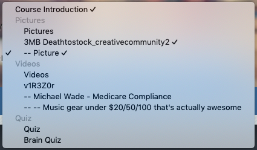

Section Header
A seciton header breaks up the menu structure by grouping together sets of pages. Different themes may render sections in their own way. Pages between sections map to Outcomes in SCORM and have no logical function when packaged for other destinations.
You can use as many section headers as you like. Section headers cannot be indented as they represent logical groupings of pages.
Menu-based themes
Themes that feature a menu draw each section with a slight gap between each set of pages underneath the section header. Section headers can have their own style which is based an Item. Sections can be toggled open and closed.
Select-based themes
Any theme that implements a select based navigation will have section headers rendered as option groups. These cannot be selected and are styled differently to other list items by default.

Themes with linear navigation
Section headers are ignored as they contain no content. Navigating to a section header will skip to the adjacent page in the direction of navigation.